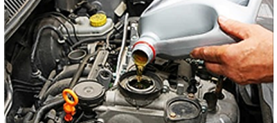
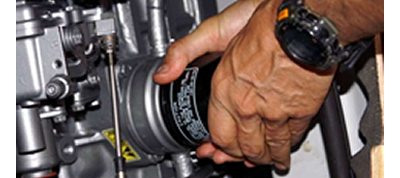
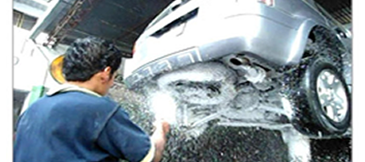
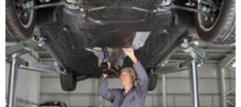
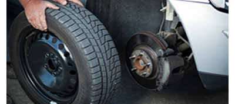

No sólo se trata de elegir un proveedor de servicios, se trata de elegir a un socio comercial que le ofrezca el soporte que usted necesita para hacer sentir bien a su auto, eso es Service Machines.
Nosotros trabajaremos duro para encargarnos de los servicios de su auto. Haga de Service machines su primera llamada y permítanos darle la Solución Completa.
Aqui usted podra consutar los distintos servicios con los que contamos para brindarle un mejor trato personalizado y asi usted no se arrepienta de elegirnos...
.
Cambio de aceite del motor
El aceite del motor es vital. Las funciones que tiene dentro del motor son las siguientes: Lubricar, limpiar, enfriar, evitar oxidación y desgaste del motor. Para conservarlo en buen estado se recomienda remplazarlo cada 5000 km ó 3 meses.
Cambio de filtro de aceite
Así como es vital el aceite de motor, es muy importante que se encuentre libre de impurezas. Esto se logra gracias al filtro de aceite, por lo que el intervalo de remplazo deberá ser el mismo que el del aceite de motor.
Lavado y engrasado de chasis y motor
La mayoría de la gente piensa que este servicio es meramente estético y no preventivo. La realidad es que dentro de los servicios de mantenimiento preventivo, es uno de los más importantes.
Revision y relleno de niveles
Todos los líquidos utilizados en el automóvil son importantes y el hecho de no tener el nivel adecuado, produce fallas a muy corto plazo y muchas veces origina reparaciones muy costosas. Lo anterior también se produce al utilizar materiales que no cumplan con las normas de calidad recomendadas para cada automóvil.
Limpieza y ajuste de frenos
Los frenos son vitales para una conducción segura de su automóvil. EPS realizará siempre una inspección dentro de nuestros servicios, con el afán de evitar futuras complicaciones. En esta revisión se analiza todo el sistema de frenos, la vida de los componentes, se realiza una limpieza de todas las partes.
Lavado de carroceria y aspirado
De nada serviría un servicio tan bien pensado si al final le entregáramos un automóvil sucio. ¡Sabemos lo que su auto significa para usted! En EPS su automóvil siempre será entregado limpio y aspirado. Utilizamos shampoo especial para carrocerías formulado con una cera líquida para proteger su automóvil.